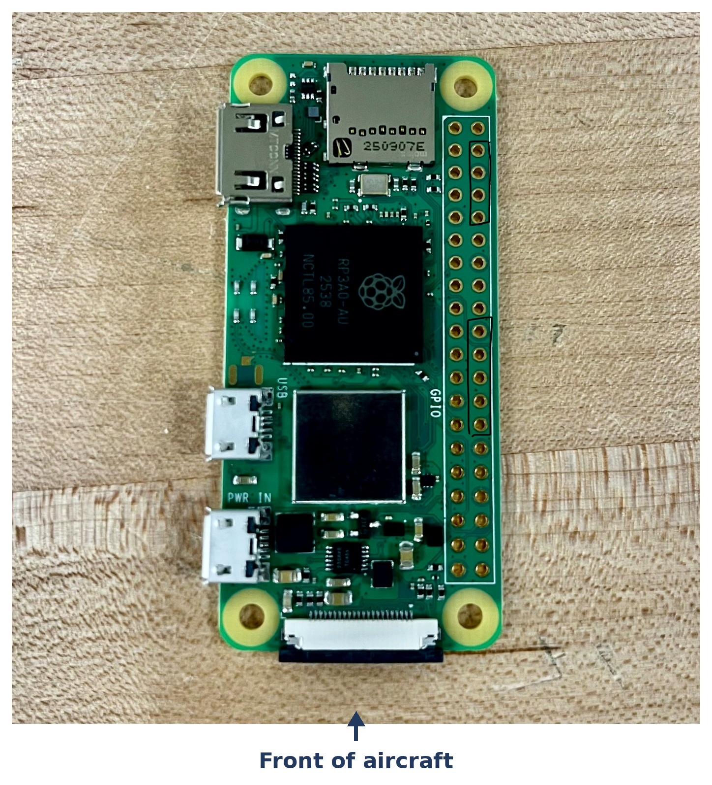
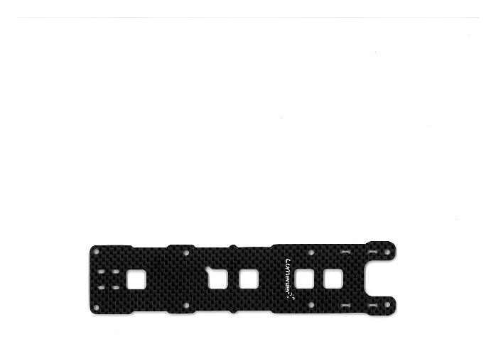
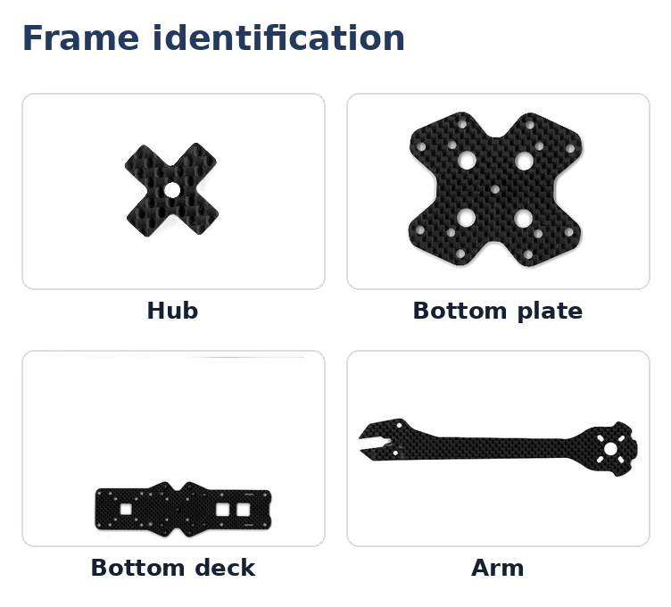
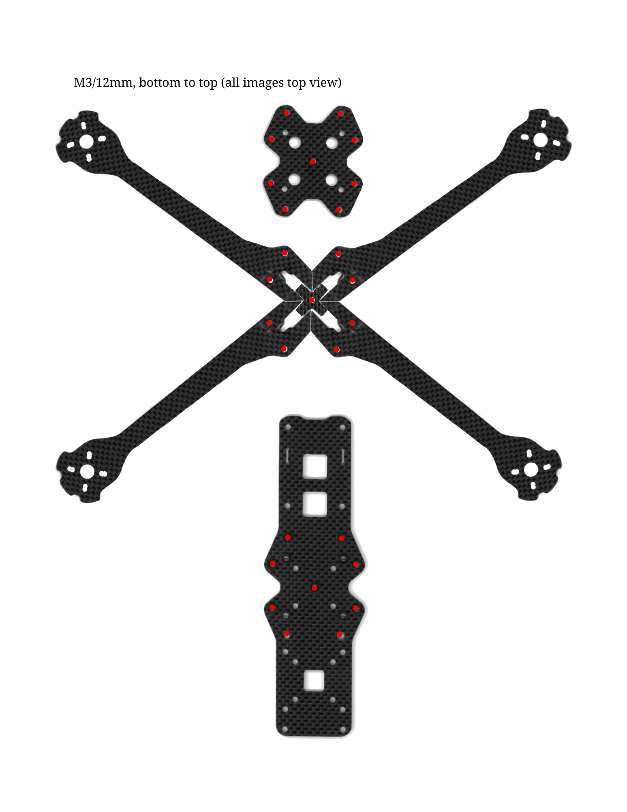
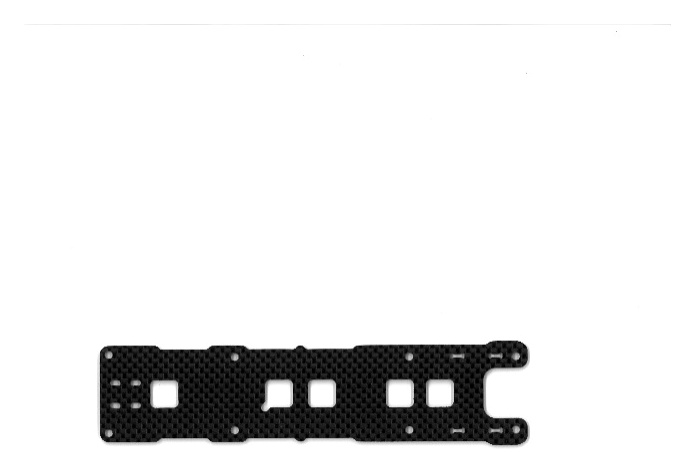
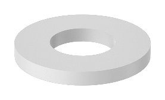
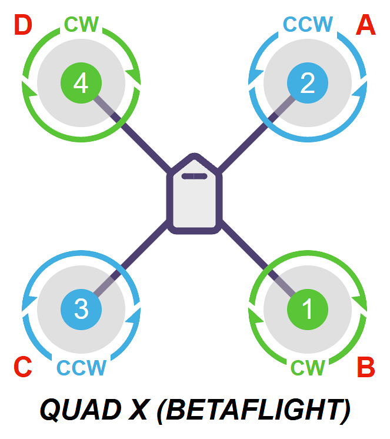

HAMR II Build Manual
All tasks on one page for print, review, or faculty walkthroughs.
Overview
This is the all-tasks-on-one-page version of the HAMR II manual. For bench use, the one-task-per-page version is usually easier to manage. Hover dotted-underlined hardware names for a preview image.
The microSD card is an issued tool item and must be recovered at the end of the lesson.
Task 1: Solder Raspberry Pi
Install the latch-style 4-pin header and the SIP switch on the Raspberry Pi Zero 2 W before anything is mounted to the airframe.


Parts required
- Raspberry Pi Zero 2 W
- Connector, latch, 4-pin header
- Switch, SIP
- Solder
Tools required
- Soldering station
- Soldering iron
- Helping hands
- Ventilation fan
- Eye protection
Steps
- Turn on the ventilation fan and put on eye protection.
- Set the soldering iron to 740 °F.
- Insert the 4-pin latch header into the boxed location near the top of the Raspberry Pi. The connector body should face outward from the board edge so the matching harness can latch onto it later.
- Flip the board carefully and solder all four header pins. For each joint: touch the iron tip to the pad and pin together, feed a small amount of solder, then remove solder first and the iron second.
- Insert the SIP switch into the boxed location lower on the board. With the Raspberry Pi oriented as shown in the reference image, the switch marking should be readable from the solder-hole side, with the label oriented to the right.
- Solder all five switch pins. Avoid flooding adjacent pads with solder.
- Inspect every joint and reflow any joint that looks dull, cracked, or poorly wetted.
Common errors
- Not using eye protection or the ventilation fan.
- Applying too much solder and shorting adjacent pins or pads.
- Clamping the Raspberry Pi on top of components instead of at the board edges.
- Creating cold solder joints that look dull, lumpy, or only partially bonded to the pad.
- Holding the iron too long and lifting pads or overheating the board.
Task 2A: Build the sensor suite superstructure
Install the camera, cable, GPS module, and standoffs on the sensor suite superstructure before it is mated to the base plate.


Parts required
- Sensor suite superstructure
- Raspberry Pi Camera Module 2
- Mini-to-standard camera adapter cable
- ARK SAM GPS module
- 6-wire GPS cable
- Camera/GPS hardware kit
Tools required
- 1.5 mm Allen key
- 2.5 mm Allen key
- 5.5 mm nut driver
- Fine-tip pliers / needle-nose pliers
Steps
- Prepare the camera mount. Remove any temporary cable already attached to the camera and peel the protective tape from the lens.
- Use the smallest screws in the camera/GPS hardware kit to clear all four camera holes in the superstructure before final installation.
- Insert the four M2 × 6 mm socket-head screws from the rear of the camera toward the front. Use fine-tip pliers through the peep holes to hold or guide the screws while you start them.
- Seat the camera in the superstructure with the lens protruding through the front opening and the camera port facing outward. Tighten the screws with the 1.5 mm Allen key only until the camera is secure.
- Install the camera cable into the camera now. Open the black retainer gently, insert the wide end of the ribbon cable fully, and close the retainer. On both ends of the camera cable, the exposed metal contacts must face away from the black retainer.
- Plug the white JST-GH end of the 6-wire cable into the ARK SAM GPS module.
- With the superstructure upside down, align the GPS module so its flat side faces you in the reference orientation. Insert four M3 × 12 mm socket-head screws through the superstructure and GPS module.
- Install four M3 nylon-insert locknuts. Tighten in a crisscross pattern with the 2.5 mm Allen key on the screw heads and the 5.5 mm nut driver on the nuts.
- Install the four M3 × 25 mm female/female aluminum standoffs onto the superstructure.
- Secure each standoff from underneath with one M3 × 10 mm socket-head screw. Hand-start all four before tightening.
Common errors
- Using the wrong Allen key size for the camera screws. The M2 camera screws use a 1.5 mm Allen key.
- Overtightening the camera screws into the brass inserts.
- Installing the camera cable backwards. The metal contacts must face away from the black retainers on both ends.
- Installing the GPS module rotated or reversed relative to the reference orientation.
- Fully tightening one GPS nut before the others are started, which twists the assembly or misaligns the board.
Task 3B: Assemble the lower frame
Cadet B builds the lower airframe using the Lumenier frame kit while keeping the FC/ESC stack screws aside for later.



Parts required
- Lumenier QAV-R 2C 7-inch frame kit
- Hub
- Bottom plate
- Bottom deck
- Four arms
Tools required
- 2.0 mm Allen key
Steps
- Lay out the frame parts shown in the reference figure and identify the hub, bottom plate, bottom deck, and four arms.
- Retain all other bagged frame hardware for later use. Do not open or use hardware that this step does not call for.
- Confirm the bottom deck orientation before assembly. The face with the raised metal rings must point upward toward the inside of the frame.
- Assemble the center section by placing the arms between the lower center plates exactly as shown in the reference photos and the supplemental visual guide below. Start with one arm, then add the remaining three arms.
- Use the nine short frame screws intended for the motor-arm mounting holes to clamp the arm stack-up. Start all nine before tightening.
- Set aside the four long frame-supplied M3 stack screws for the FC/ESC stack. Do not lose them.
- Use the remaining short deck screws to fasten the rest of the lower center plates together.
- Do not use the extra 14 mm frame screws in this task.
Common errors
- Installing the bottom deck upside down. The raised metal rings must face upward.
- Mixing the stack screws in with the other frame screws and then not finding them later.
- Starting to tighten before all arms and center plates are aligned.
- Using the wrong screws from the frame hardware bags.
Task 4: Install the motors
Mount all four motors to the arms using the short motor screws from the EMAX motor kits.


Parts required
- Four EMAX Pro Series 2808 motors with accessories
- Lower frame
Tools required
- 2.5 mm Allen key
Steps
- Open one motor package at a time and keep that motor’s accessories together until you identify the correct bolts.
- Find the two black-bolt bags. One contains 8 mm screws and one contains 10 mm screws.
- Use the 8 mm screws for motor mounting. Return the 10 mm screws to the parts bin.
- Place one motor at the end of an arm and align its mounting holes. Route the motor wires along the arm, not off to the side.
- Install all four motor screws by hand first, then repeat for the other three motors.
- After all four screws on a motor have started, snug them with the 2.5 mm Allen key in a crisscross pattern.
- Collect the propeller nuts that ship with the motors and store them in the propeller bag so they are not lost.
Common errors
- Using the long 10 mm motor screws instead of the 8 mm screws.
- Tightening one motor screw fully before the other three are started.
- Routing motor wires off the side of the arm where they may later interfere with props or cable ties.
- Losing the propeller nuts that came with the motors.
Task 5: Install the ESC and flight controller stack
Build the ARK ESC / ARK FPV flight-controller stack on the lower frame, attach the battery lead, and connect the motors to the ESC.
Parts required
- Lower frame
- ARK 4-in-1 ESC
- ARK FPV flight controller
- FC/ESC stack hardware
- Custom battery lead
- 8-wire FC-to-ESC cable
Tools required
- 2.0 mm Allen key for the frame-supplied stack screws
- 5.5 mm nut driver
- Pliers for rubber isolators, if needed

Steps
- Install the rubber mounting isolators into the ESC and flight controller mounting holes. Pull them through gently with pliers if needed, but do not tear them.
- Route the XT60 battery lead up through the rear square opening in the frame.
- Ask a faculty member for the two small screws used to attach the battery lead to the ESC power pads or terminals. Attach black to negative and red to positive.
- Orient the ESC so the battery lead exits the tail of the aircraft, with black on the left and red on the right when viewed from above in the direction of flight.
- Place the flight controller above the ESC in the current build orientation and connect the supplied 8-wire FC-to-ESC cable between the matching stack ports.
- Insert the four long frame-supplied M3 stack screws from the top, through the stack and frame, using the visual reference below to confirm the screw direction.
- Install the four M3 nylon-insert nuts underneath the frame and tighten them in a crisscross pattern with the 5.5 mm nut driver on the nuts and the 2.0 mm Allen key on the screw heads. Stop when each screw is approximately flush with the top of its locknut.
- Stop tightening as soon as the rubber isolators show visible compression. Do not crush them.
- Connect the four motor leads to the ESC and route each set of wires cleanly along its arm.
Common errors
- Using the wrong tool size on the stack screws. These are M3 screws with a 2.0 mm Allen drive.
- Reversing the battery lead polarity.
- Installing the ESC backward so the battery lead exits the wrong end of the frame.
- Fully tightening one stack nut before the other three are started.
- Overcompressing the rubber isolators and defeating vibration isolation.
Task 6: Install the vehicle top plate and sensor-suite base plate
Merge the Cadet B lower frame with the top plate and the 3-D printed sensor-suite base plate.


Parts required
- Lower frame assembly
- Vehicle top plate
- Battery pad
- Sensor-suite base plate
- Four M3 × 10 mm flat-head countersunk screws from the fastener kit
Tools required
- 2.5 mm Allen key
Steps
- Remove the silicone battery pad from the upper frame package.
- Punch out the two square cutouts and the one rectangular cutout before peeling the adhesive backing.
- Stick the battery pad to the side of the top plate marked “Lumenier.” Press it down fully.
- Install the top plate onto the lower frame using the four rear top-plate mounting holes and the correct frame-supplied hardware.
- Place the sensor-suite base plate on top of the vehicle top plate.
- Confirm the small impressed arrow on the base plate points forward and that the arrow faces upward.
- Align the base plate with the four front mounting holes and secure it using the four M3 × 10 mm flat-head countersunk screws from the fastener kit.
- Tighten the countersunk screws until they sit flush. Do not overtighten into the printed base plate.
Common errors
- Forgetting to remove the battery-pad cutouts before sticking it down.
- Installing the battery pad on the wrong side of the top plate.
- Installing the sensor-suite base plate backward with the arrow pointing the wrong way.
- Using the wrong countersunk hardware. This task uses the M3 × 10 mm flat-head screws from the fastener kit.
- Overtightening and damaging the printed base plate.
Task 7: Install the Raspberry Pi
Mount the Raspberry Pi on the sensor-suite base plate before the superstructure is attached.

Parts required
- Prepared Raspberry Pi Zero 2 W
- Raspberry Pi mounting kit
- Four M2.5 × 4 mm nylon spacers
- Four M2.5 × 8 mm socket-head screws
- Issued microSD card when directed
Tools required
- 2.0 mm Allen key
Steps
- Place one M2.5 nylon spacer over each of the four brass heat-set inserts in the sensor-suite base plate.
- Record the Raspberry Pi identifier if your section tracks serial numbers.
- Place the Raspberry Pi on top of the spacers in the reference orientation, with the front of the aircraft toward the CSI camera connector end of the board.
- Start all four M2.5 × 8 mm mounting screws by hand before tightening any one screw.
- Snug the screws with the 2.0 mm Allen key in a crisscross pattern. Tighten only until the board is secure.
- When directed by faculty, insert the prepared microSD card into the Raspberry Pi. The microSD card is a tool and must be recovered at the end of the lesson.
Common errors
- Mounting the Raspberry Pi directly to the base plate without the spacers.
- Using the wrong Allen key on the M2.5 mounting screws.
- Twisting the board by tightening one corner fully before the other three screws are started.
- Inserting the microSD card backwards or at an angle.
- Leaving the issued microSD card in circulation at the end of the lesson.
Task 8: Install the sensor suite and connect the wiring
Mate the superstructure to the base plate, connect the camera cable, route the GPS lead, and connect the custom FC-to-RPi harness.

Parts required
- Vehicle with base plate and Raspberry Pi installed
- Completed sensor-suite superstructure
- 6-wire GPS cable
- Custom FC-to-RPi harness
- Four M3 × 10 mm socket-head screws
Tools required
- 2.5 mm Allen key
Steps
- Open the CSI camera connector on the Raspberry Pi gently by lifting the black retainer.
- Insert the camera ribbon cable fully and evenly into the Raspberry Pi CSI connector. On the Raspberry Pi end, the ribbon cable metal contacts must face away from the black retainer.
- Close the CSI retainer and lightly tug the cable to confirm it is locked.
- Place the completed sensor-suite superstructure onto the base plate with the correct front-facing orientation.
- Align the four standoffs with the four mounting holes in the base plate and install the four M3 × 10 mm socket-head screws from underneath. Start all four before tightening.
- Tighten the four base-to-superstructure screws in a crisscross pattern with the 2.5 mm Allen key.
- Route the 6-wire GPS cable cleanly to the flight controller and connect it to the FC port labeled GPS.
- Connect the custom FC-to-RPi harness between the Raspberry Pi latch header from Task 1 and the FC port labeled TELEM.
- Route cables so they do not get pinched between plates and do not hang into the propeller arc. Add cable ties near the main body as needed.
- Install the battery strap around the center of the top plate.
Common errors
- Inserting the camera ribbon cable backwards. The metal contacts face away from the black retainer on both ends.
- Not seating the ribbon cable fully before closing the retainer.
- Rotating the superstructure and forcing the standoffs to fit.
- Routing GPS or TELEM cables into the wrong FC ports.
- Pinching the camera ribbon or GPS cable between the superstructure and base plate.
- Leaving loose motor or harness wiring where propellers will later pass.
Task 9: Software setup and motor test
Connect Mission Planner, set the frame type, and verify motor order and direction before propellers ever go on.

Parts required
- Vehicle with FC installed
- 4S LiPo battery
Tools required
- USB-C cable
- PC running Mission Planner
Steps
- Connect the flight controller to the PC with USB-C and open Mission Planner.
- Select the correct COM port and set the baud rate to 921600.
- Connect and verify that the artificial horizon moves in the correct direction when you roll, pitch, and yaw the vehicle by hand.
- Open CONFIG → Full Parameter List and set FRAME_CLASS = 1 and FRAME_TYPE = 12.
- Write the parameters, then disconnect and reconnect the USB-C cable so the FC reboots.
- Open SETUP → Optional Hardware → Motor Test.
- Only after you are in Motor Test, connect the 4S LiPo battery.
- Set Throttle % to 15 and Duration to 2 seconds.
- Test one motor at a time and compare the result to the motor map reference figure. Stop immediately if a motor spins the wrong way, does not start cleanly, or makes abnormal noise.
Common errors
- Testing with propellers installed.
- Connecting the LiPo before you are ready for Motor Test.
- Using the wrong COM port or baud rate and assuming the FC is bad.
- Forgetting to reboot after changing FRAME parameters.
- Testing multiple motors at once instead of one at a time.
- Ignoring abnormal startup behavior such as stuttering or scraping.
Task 10: Load preset parameters
Load the current faculty-issued preset parameter file after the aircraft is fully wired.
Parts required
- Completed aircraft without propellers
Tools required
- USB-C cable
- PC running Mission Planner
Steps
- Download the current preset parameter file from the course Teams page.
- Connect the flight controller to the PC and open Mission Planner.
- Reconnect to the FC at 921600 baud.
- Open CONFIG → Full Parameter List and select Load from file.
- Select the current preset parameter file and acknowledge the confirmation dialogs.
- Select Write Params and confirm the write operation.
- Disconnect and reconnect USB-C so the FC reboots, then reconnect in Mission Planner.
Common errors
- Loading the file but forgetting to select Write Params.
- Using an old parameter file instead of the current one for the course.
- Skipping the reboot after writing the parameters.
- Selecting the wrong COM port and assuming the FC is unresponsive.
Task 11: Sensor calibration
Run accelerometer and compass calibration, then enter the measured total battery voltage.
Parts required
- Completed aircraft, no propellers
- 4S LiPo battery
Tools required
- USB-C cable
- PC running Mission Planner
- LiPo battery tester
Steps
- Open SETUP → Mandatory Hardware → Accel Calibration.
- Place the aircraft on a flat, stable surface with no battery connected and no propellers installed.
- Run the six-position accelerometer calibration exactly as Mission Planner requests: level, left side down, right side down, nose down, nose up, and upside down.
- Open the Compass page and start onboard magnetometer calibration.
- Rotate the aircraft slowly about roll, pitch, and yaw until the progress bar completes.
- If Mission Planner reports MAG_CAL_SUCCESS and requests a reboot, reboot the FC.
- Connect the 4S LiPo battery.
- Measure the battery using the LiPo tester on the JST-XH balance lead and record the total voltage shown as ALL.
- Open SETUP → Optional Hardware → Battery Monitor and enter the measured ALL voltage.
- Disconnect the LiPo battery and close Mission Planner when finished.
Common errors
- Calibrating on a non-level or soft surface.
- Moving the aircraft before Mission Planner confirms each calibration pose.
- Rotating too quickly during compass calibration.
- Performing compass calibration near large metal objects or power supplies.
- Entering a single-cell voltage instead of the total ALL voltage.
- Leaving the battery connected after calibration.
Task 12: Mount the propellers
Install the correct CW and CCW propellers only after motor test and software setup are complete.
Parts required
- Vehicle with motors tested
- Gemfan LR 7035 2-blade propellers
- Four propeller nuts
Tools required
- M8 nut driver
Steps
- Remove the four propellers and the four propeller nuts from the propeller bag.
- Identify CW and CCW propellers with the label side facing upward. The thicker leading edge travels in the direction of rotation.
- Match each propeller to the correct motor based on the verified motor directions from the motor-test task.
- Seat each propeller fully on the motor shaft.
- Thread the propeller nut on by hand first, then snug it with the M8 nut driver.
- Check that every propeller sits flat with no wobble or play.
Common errors
- Installing the propeller upside down with the label facing down.
- Putting a CW propeller on a CCW motor or vice versa.
- Not seating the propeller fully before tightening the nut.
- Overtightening and cracking the propeller hub.
- Leaving a propeller nut only finger-tight.
Flight-day handoff checklist
The workflow chart ends with Flight Day. Before an aircraft is handed off for its first prop-on run or flight event, confirm the items below.
| Check | What good looks like |
|---|---|
| Airframe | No missing fasteners, no visibly cracked printed parts, no loose arms, and no loose stack hardware. |
| Wiring | Camera ribbon fully seated, GPS connected to GPS, custom Raspberry Pi harness connected to TELEM, and no loose wires in the prop arc. |
| Software | Frame type written correctly, preset parameters loaded, calibration complete, and any battery-monitor value entered from the measured total voltage. |
| Propellers | CW and CCW propellers match the verified motor directions and all propeller nuts are snug. |
| Issued items | The issued microSD card is accounted for and recovered at the end of the lesson unless faculty directs otherwise. |